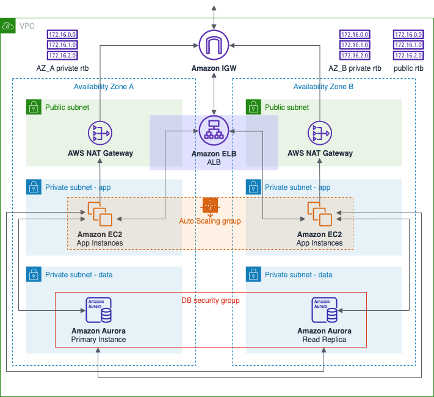
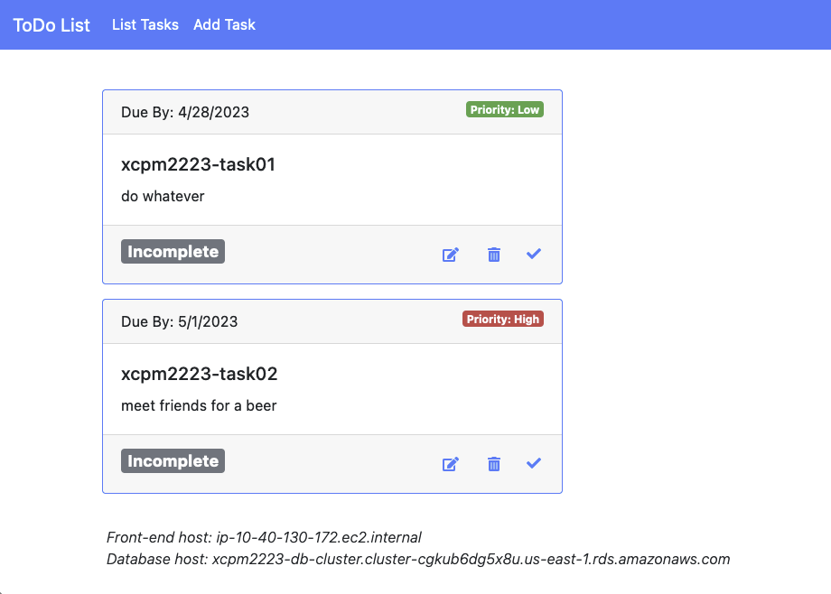

Despregamento en AWS dunha arquitectura HA elástica de 2 capas
Usando os servizos de AWS, nesta práctica vamos despregar unha arquitectura de dúas capas que proporcione alta dispoñibilidade, escalabilidade e seguridade para un servizo de xestión de tarefas pendentes. A escalabilidade e resiliencia da arquitectura comprobarase realizando probas de carga e de inxección de fallas.
 Imaxe: arquitectura de dúas capas que se vai despregar nesta práctica indicando os servizos AWS que se van empregar.
Unha arquitectura de dúas capas é un modelo cliente-servidor de arquitectura software que divide a aplicación en dúas capas lóxicas:
- a capa que contén a lóxica da aplicación e que xera o contido visualizado polos clientes,
- a capa de almacenamento de datos.
A división dunha aplicación en capas aporta modularidade á aplicación, permitindo xestionar cada capa de maneira independente e configurar a escalabilidade, a HA e a seguridade do xeito máis adecuado a cada capa.
A aplicación que vamos utilizar como exemplo é unha aplicación para unha contorna LAMP, cun frontend escrito en PHP e un backend compatíbel con MySQL, para a xestión de tarefas pendentes.
 Imaxe: aplicación para a xestión de tarefas pendentes que usaremos como exemplo.
Nota
A práctica está enfocada principalmente aos aspectos relacionados coa alta dispoñibilidade e elasticidade da arquitectura. Algúns elementos que son habituais nestas arquitecturas que teñen a ver co rendemento (p.e. uso dunha caché na capa de datos) ou a seguridade (p.e. configuración do HTTPS) deixaronse fora por non facela demasiado longa. Tampouco se trata a automatización do despregamento con ferramentas IaC (Infrastructure as Code) como CloudFormation ou Terraform.
Licenza

Despregamento en AWS dunha arquitectura HA elástica de 2 capas de Xoán C. Pardo ten unha licenza Creative Commons Recoñecemento-Non comercial 4.0 Internacional.